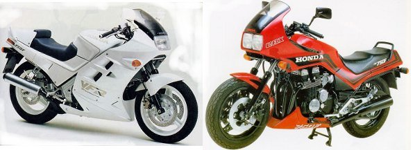

Preface
That the CBX750F (RC17) was a stopgap model between the not so successfully selling VF750F (RC07/15) and the VFR750F (RC24) is a common theory.
Considering the development lead times for a new bike, Honda must have worked pretty darn fast when they were made to realize the shine had gone off the RC07/15.
Why did the RC17 work so well if Honda were pouring big dollars into the V-four concept?
Perhaps Honda got the RC17 right to keep it as a backup in case the new RC24 would flop as well, not in mechanical sense but a sales sense. Would the distrust generated by the RC07/15 carry over onto the RC24? Initially, it did, but the punters soon realised the RC24 was a vastly refined version of its predecessor.
This left the RC17 in limbo as the RC24 took off. I suspect that if the RC24 failed in the market, then a revised RC17 may have been waiting in the wings.
Would the RC30 have ever seen the light of day if the RC24 had flopped in the market? If the V4 RC30 would have been scrapped, would an inline 4 RC30 have been invented to counter the GSX-R?
Whether it would have water cooling, alloy frame or other goodies is open to conjecture.
Many of the fittings on the RC17 and 24 look similar or are the same. I’ve wondered about the differences and similarities between the RC17 and the RC24.
The alloy wheels from the RC24 are able to be fitted to the RC17 without major modification, for example.
Was there a second generation RC17 sitting on the drawing board waiting for the RC24 to flop, ready to use an assortment of lighter parts that the RC24 could use as well?
We will never know.
I’ve gone through two workshop manuals to compile this list of interesting comparisons, and added some comments.
| RC17 | RC24 | |
| Dimensions | ||
| Wheelbase | 1465mm | 1480mm |
| Overall length | 2145mm | 2120mm |
| Overall height | 1240mm | 1170mm |
| Overall width | 740mm | 730mm |
| Seat Height | 795mm | not specified |
| Ground clearance | 145mm | 135mm |
| Dry weight | 218kg | 199kg |
| Curb weight | 238kg | 222kg |
| Chassis | ||
| Frame weight | no spec | 14kg |
| Front suspension travel | 150mm | 140mm |
| Rear suspension travel | 42.5mm | 105mm (Note #1) |
| Rear suspension preload | Air | Hydraulic on spring |
| Caster angle | 27deg | 27deg 40min (Note #2) |
| Trail | 93mm | 108mm |
| Fork oil capacity | L-400cc R-375cc |
L-370cc R-358cc |
| Fork oil height | no spec | 153mm |
| Fork spring free length | 543mm+spacer | 365mm+spacer |
| Brakes | ||
| Caliper type (both) | Sliding type, with twin non-opposed pistons | Sliding type, with twin non-opposed pistons |
| Front brake swept area | 904cm^2 | 648cm^2 |
| Rear brake swept area | 452cm^2 | 324cm^2 |
| Brake disc thickness new | F 5.0mm R 7.0mm |
F 4.0mm R 5.0mm |
| Disc thickness limit | F 4.0mm R 6.0mm |
F 3.5mm R 4.0mm |
| Front master cyl bore | 15.89mm | 15.89mm (Note #3) |
| Front caliper cyl bore | 32.09mm | 30.23mm (Note #4) |
| Rear master cyl bore | 14.00mm | 12.70m |
| Rear caliper cyl bore | 32.23mm | 27.00mm |
| Engine | ||
| Cooling | Air | Liquid with electric radiator fan |
| Bore and stroke | 67×53mm | 70×48.6mm |
| Displacement | 747cc | 747cc |
| Compression ratio | 9.3:1 | 10.5:1 |
| Maximum horsepower(DIN) | 91ps at 9500 rpm | Not specified |
| Maximum torque | 7.1kg/m at 8500 rpm | Not specified |
| Oil cooler | 5 row | 4 row |
| Oil capacity (after rebuild) | 3.6l | 4.0l |
| Oil capacity (after draining) | 2.5l | 3.9l (Note #5) |
| Oil capacity filter+oil change | 2.8l | 3.9l |
| Oil pump delivery | no spec | 54l/min at 6000 rpm |
| Oil pressure | 90psi at 6000 rpm | 71-85psi at 5000 rpm |
| Oil pump drive | Gear | Chain |
| Cylinder compression | 171+/-28psi | 199+/-28psi |
| Cam timing (at 1mm lift): Inlet Opens Inlet Closes Exhaust opens Exhaust closes: |
10deg BTDC 40deg ATDC 45deg BBDC 5deg ATDC |
10deg BTDC 40deg ATDC 40deg BBDC 10deg ATDC |
| Engine weight (dry) | 80kg | 77.3kg |
| Carburetion/Fuel system | ||
| Carby type | Keihin VE | Keihin |
| ID number | VE64B | VD BOB |
| Throttle bore | 34mm | 34.5mm |
| Venturi bore | 30.8mm | 31.6mm |
| Main jet | #112 | #118 |
| Fuel pump | No | Yes |
| Fuel capcaity | 22l | 20l |
| Fuel reserve capacity | 4l | 3.5l |
| Drive train | ||
| Transmission | 6 speed | 6 speed |
| Primary reduction | 1.780 | 1.9393 (64/33) |
| Final reduction | 2.812 | 2.8125 (45/16) |
| Gear ratios: 1st 2nd 3rd 4th 5th 6th |
3.000 2.235 1.750 1.434 1.240 1.115 |
2.8461 2.0625 1.6315 1.3333 1.1538 1.0357 |
| Gear ratios (overall): 1st 2nd 3rd 4th 5th 6th |
15.016 11.187 8.759 7.178 6.207 5.581 |
15.5241 11.2450 8.8991 7.2727 6.2935 5.6493 |
| Ignition Coils | 2 | 4 |
| Ignition timing (“F” mark, at 1000rpm idle) | 10deg BTDC | 15deg BTDC |
| Advance starts at | no spec | 1800rpm |
| Full advance | 32deg BTDC at 3150 rpm | 37deg BTDC at 3300 rpm |
| Alternator(@ 5k rpm) | 320W | 350W |
| Battery capacity | 12V/14Ah | 12V/12Ah |
| Standard sparkplug | DPR8EA-9 | DPR9EA-9 (Note #6) |
Note #1: Damned if I know how Honda came up with the RC17 rear suspension travel figure.
I’m sure my RC17 has a travel closer to that of the VFR than the book value. Theymust have been thinking shock stroke.
Note #2: The book lists the RC17 caster as 63 deg. It seems they changed their way of measurement, ie from the horizontal, to from the vertical.
Ted’s comment: The RC24 uses much shorter springs and a bit less oil. Maybe this is to reduce unsprung and semi-sprung mass. However, the RC24 lacks rebound damping adjustment, and possibly linked fork air adjustment.
The RC17 has a shorter wheelbase, less trail and near enough the same caster, so it should steer noticably faster. The extra 10mm of RC17 wheel travel is handy with the small front wheel.
Note #3: The RC24 master cylinder uses an adjustable lever, which may not be a direct replacement for the RC17 lever, but as the master piston appears the same, it would be an interesting excercise to see if the lever fits. As well, the front master cylinders are different. The RC17 master has the hose union on the front, while the RC24 has the hose union on the LH side, near the fork cap.
Note #4: The front and rear calipers on the RC17 appear the same, but are different. While the front and rear calipers can fit the same brake pads, correct rear pads are thicker than those on the front.
Ted’s comment: The RC24 discs are quite a bit thinner, and combined with their drilling as opposed to spiral grooves on the RC17, would result in a disc quite a bit lighter than the RC17’s, but with much less heat sink mass.
The Nissin calipers appear to be smaller on the RC24, see the difference in swept area as well, leading to unsprung mass savings, as well as rotating mass.
The smaller pistons in the RC24 calipers with the same master cylinder bore would result in a firmer lever, but with a smaller swept area stopping may not be as good.
Note #5: The larger differences in the oil capacity on the RC17 is curious. I can only assume that baffling in the sump is substantial, and that the RC17 keeps a fair bit of oil in the hydraulic tappet system.
RC17 owners should remember to drain the frame rails as well when performing oil changes. The RC17 stores oil in the frame rails to reduce sump height to enable the engine to sit lower in the frame, compared to earlier motors.
The RC17 uses a twin rotor pump. Output from one rotor goes to the filter and then the engine systems as usual. The other rotor feeds the cooler system, which drains directly back to the sump.
The RC24 is somewhat different. As Honda puts it: “The new system adopts a double rotor trochoid pump which collects oil directly from both the oil cooler and the sump. Oil entering the pump from both points is directed to the transmission and main gallery. The previous oil cooler feeds oil from the cooler to the sump. This system, on the other hand, supplies oil which has been cooled in the cooler directly to the various engine parts. Lowering the temperature of oil supplied to the parts greatly improves the engine wear characteristic.”
Ted’s comment: It sounds like the oil should flow like: sump -> rotor1 -> cooler -> rotor2 -> filter -> galleries but I can’t tell because the book diagram is so damned complicated, and the blurb suggests that the second rotor sucks both cooled and uncooled oil, so what’s the fuss?
If the RC17 drains its cooled oil back to near the pickup, isn’t the effect the same?
Note #6: Hotter <- DP7 – DP8 – DP9 -> Cooler
Ted’s comment: Interesting how the RC24 needs 5 deg more advance right over the range. Is this a product over greater over- squareness? Or a slower burning chamber? The higher compression should speed things up in there.
The RC24 can afford to run hotter plugs with the water cooled heads.
Note how the RC24 has a gruntier alternator feeding a smaller battery. Weight saving in action?